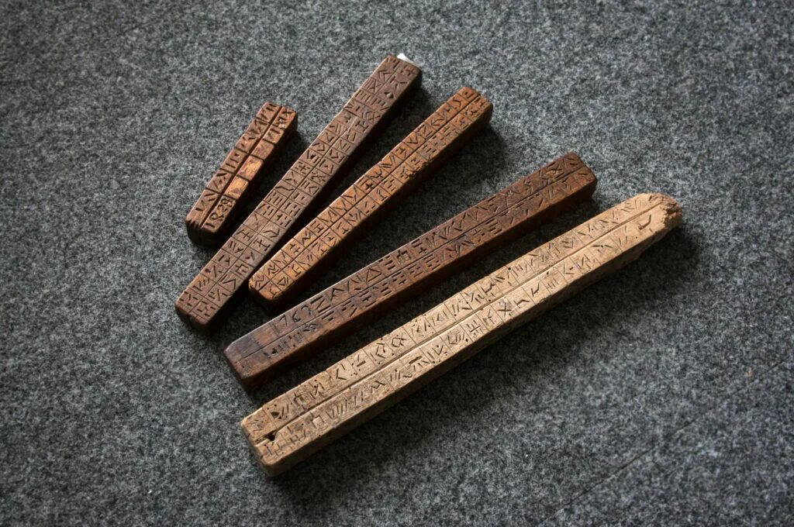

Древнейшие вычислительные инструменты, использовавшиеся для счета и простых математических операций различными цивилизациями.
Первое механическое вычислительное устройство с подвижными элементами, позволявшее производить сложные арифметические операции и использовавшееся во многих древних цивилизациях.
Первая успешная механическая вычислительная машина, способная выполнять операции сложения и вычитания. Революционное изобретение для своего времени.
Усовершенствованная механическая машина Готфрида Лейбница, способная выполнять все четыре основных арифметических операции: сложение, вычитание, умножение и деление.
Революционный проект Чарльза Бэббиджа - первого программируемого компьютера общего назначения, содержащего все основные элементы современных компьютеров: процессор, память и устройства ввода-вывода.
Первый полнофункциональный электронный цифровой компьютер общего назначения. Весил 30 тонн, занимал целую комнату и ознаменовал начало компьютерной эры.
Manchester Baby стал первым компьютером на транзисторах, заменив громоздкие электронные лампы. Это решение кардинально уменьшило размеры, энергопотребление и повысило надёжность вычислительных машин.